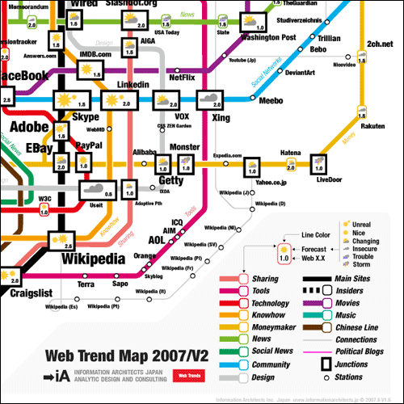

La cartografia mi piace molto. Mi piacciono molto le carte, specie quelle di carta. Nel tempo però ho iniziato ad aprezzare anche quelle digitali, soprattutto quelle “strane”.
In questi giorni caldi d’estate, mi sono finiti sotto gli occhi alcuni siti con delle carte di questo tipo, e volevo condividerne il piacere con voi.
Web Trend Map 2007 Version 2.0

Questa mappa rappresenta gli andamenti – i trend – del web del 2007. E’ a cavallo tra la mappa di una metropolitana, ed una con le previsioni del tempo. Nello stralcio qui in alto vediamo ad esempio che da Wikipedia passano la rotta “dei siti principali”, quella della “condivisione” e quella del “knowhow“; vediamo pure che (per fortuna) su wipedia c’è “bel tempo”.
Tutti gli altri dettagli, ed anche il download della carta qui.
La mappa delle emozioni di San Francisco
Immaginate di avere un GPS e di registrare la vostra posizione in giro per la vostra città; immaginate di poter registrare contestualmente anche le vostre emozioni. Verrebbe fuori la mappa emotiva della vostra città.
Non è una pazzia, si tratta del progetto BIO MAPPING. Quella che vedete sotto è la mappa delle emozioni di San Francisco di cui esistono una versione in Flash ed una per Google Earth.
In ultimo qualcosa di offtopic. Non si tratta di carte, ma di fotografie che la NASA sta raccogliendo durante la missione su Marte. E’ possibile risolvere oggetti di pochi metri.
Ogni foto è commentata, è ricca di metainformazioni, ed è collegata ad un’area tematica. Di impatto notevolessimo la sezione dedicata ai processi eolici (cè vento su Marte ).
Da ieri è possibile visualizzare sorgenti GeoRRS (sono feed RSS con informazioni geografiche sugli elementi del feed) in Google Maps. E’ una bella novità che si aggiunge alla possibilità di visualizzare file .kml e .kmz in Google Maps, in un momento in cui è sempre più diffuso integrare l’informazione geografica alle fonti di dati: si parla di geotagging.
Non rimane che sperimentare un po’. Ecco i passi da seguire:
reperire una fonte GeoRSS
inserire l’URL del feed nella casella di testo per eseguire le ricerche in Google Maps ed avviare la ricerca
eccovi mappata su Google Maps la fonte GeoRSS che avete scelto
Il TIME ogni anno assegna il titolo di “person of the year”, e quest’anno l’uomo dell’anno sei TU. Tu che hai dato vita a svariate comunità online con una nuova voglia di collaborare e su una scala mai vista prima. Sto parlando di risultati come quelli di Wikipedia, della enorme rete di Youtube, del fenomeno MySpace. Di una comunità che il più delle volte “lavora” senza pretendere nulla in cambio, che “non solo cambierà il mondo, ma cambierà le modalità in cui il mondo cambia”.
Tutto questo è avvenuto grazie al World Wide Web, non quello della nascita, ma la sua seconda versione: il Web 2.0. Non mi dilungherò con la definizione generale di “Web 2.0″ e per questo vi rimando ad un bellissimo articolo di Tim O’Reilly.
Questa notizia ha già fatto più volte il giro del mondo, e non ci sarebbe bisogno di scriverne ancora. Ma la cosa mi tocca e mi solletica ed aggiungerò un altro post.
Anche per me TU sei l’uomo dell’anno. Non ricordo esattamente come ho iniziato a conoscerti, ma ogni giorno ormai beneficio del tuo aiuto. Ecco dove ti incontro:
su del.icio.us. In homepage, tra le pagine più viste del momento, tra quelle classificate sotto l’etichetta GIS; in tutti questi indirizzi mi fai scoprire spesso indirizzi web prima sconosciuti, URL alle volti utili, alle volte divertenti, alle volte stimolanti, alle volte essenziali (in queste ore i server delicious sono in manutenzione)
su flickr. Nella pagina dei tag più popolari dove tu ed i tuoi amici mi fate scoprire un po’ dove va il mondo. Nella pagina delle foto più interessanti della settimana, dove vado solo per ammirare quei magnifici scatti che TU hai condiviso con il mondo. Nella pagina delle foto posizionate su una mappa della Terra, dove viaggio stando seduto seduto davanti ad un grigio PC, sempre grazie a TE che hai “geotaggato” le tue foto.
su Planet Geospatial, su Slashgeo e su geoblogger, dove vengono aggregati i contributi dei più importanti Blog scritti TE e da professionisti ed amatori del mondo dei GIS
su OSDir.com, su O’Reilly Radar, su Mokey Bites, su Lifehacker, su TechCrunch, dove vado per cercare di rimanere aggiornato sulla tecnologia, sull’evoluzione del World Wide Web, sugli aspetti dell’informatica più utili, innovativi e stimolanti per la mia professione e per il mio curriculum vitae
nella comunità di MapServer, dove mi hai sempre mostrato disponibilità e mi hai insegnato molte cose
su tagzania, un altro “spazio” dove condividere su una mappa dei luoghi
su tutti i blog e i wiki dove scrivi, lasci commenti, suggerisci link, pubblichi foto, grazie a servizi come quelli offerti da wordpress, vox, pbwiki, wikispaces
dentro le comunità che sviluppano software opensource, dove cerchi sempre di migliorare il prodotto finale insieme al tuo gruppo di lavoro, ascoltando le richieste degli utenti. Sei riuscito a produrre software confrontabile e a volte anche superiore al software commerciale: Firefox, OpenOffice, Plone, WordPress, MediaWiki, Grass, qgis, OpenLayers, Ubuntu, etc. etc.
… l’elenco potrebbe essere molto più lungo
L’uomo dell’anno sei tu, perché con il tuo modo di fare hai cambiato l’utilizzo del World Wide Web. Prima eri soltanto di moda, ma adesso ti è stato riconosciuto di essere anche rivoluzionario.
Dedico sempre un po’ di tempo a leggere gli rss dei miei Blog preferiti. Tra questi, e tra i migliori c’è O’Reilly Radar. E’ un Blog molto bello in cui spesso ci sono contributi legati alla cartografia e specialmente alla cartografia online.
L’ultima scoperta che devo a O’Reilly Radar si chiama Gutenkarte. Si tratta di un browser cartografico di testi, nato per aiutare i lettori ad esplorare la componente geografica di un’opera letteraria. I libri di dominio pubblico del (favoloso) Project Gutenberg sono elaborati dal GeoParser API di MetaCarta, al fine di estrarre tutte le località geografiche contenuti negli stessi. Gutenkarte archivia queste località in un database, insieme alle citazione dei testi in cui sono state rilevate, ed offre un’interfaccia in cui un libro può essere sfogliato per capitolo, per località o in una mappa interattiva. Ultimamente è anche possibile lasciare delle annotazioni e correggere la posizione delle località archiviate.
Lezioni online per spiegare scienza e tecnologia Oilproject organizza con l’Istituto Italiano di Tecnologia una serie di lezioni divulgative su neuroscienze, nanotecnologie, farmacologia e macchine intelligenti, per raccontare al grande pubblico lo stato dell’arte della ricerca di base e applicata. Qui tutti i dettagli. Leggi tutto... (0)
Il GFOSS Day 2011 è a Foggia I prossimi 24 e 25 novembre l’Università degli Studi di Foggia ospiterà il GFOSS DAY 2011, organizzato come di consueto dall’Associazione Italiana per l’Informazione Geografica Libera GFOSS.it Leggi tutto... (1)
Mappali, denunciali e... tassa.li Tassa.li è una interessante startup realizzata da un gruppo di giovani tecnologi, con l’intento di rendere facile la denuncia di esercizi commerciali che non rilasciano il regolare scontrino fiscale. E in un periodo nero come questo, molta gente avrà una gran voglia di partecipare. Grazie a una applicazione disponibile sia per iOS che Android, è infatti possibile in pochi clic geotaggare l’esercizio e riportare la somma dello scontrino non emesso. Il tutto in maniera assolutamente anonima. E questi ragazzi dimostrano di vedere molto lontano, perché presto rilasceranno i dati raccolti in forma totalmente aperta e libera. (7)
TANTO non rappresenta una testata giornalistica ai sensi della legge n. 62 del 7.03.2001, in quanto non viene aggiornato con una precisa e determinata periodicita'. Pertanto, in alcun modo puo' considerarsi un prodotto editoriale.


 Il TIME
Il TIME